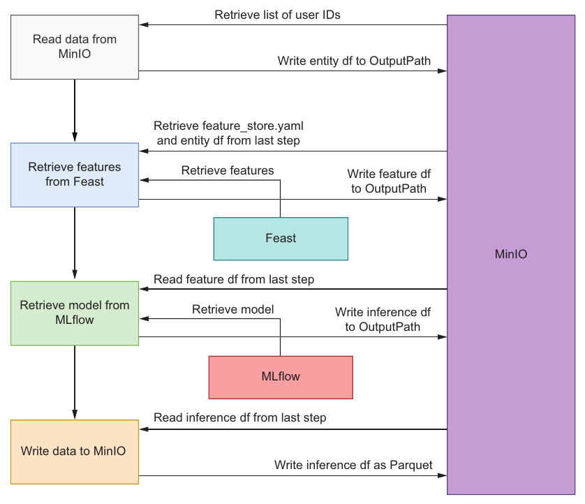

فصل ۵ · صص. ۱۲۴–۱۴۸
ارکستراسیون pipelineهای ML
Orchestrating ML pipelines
Machine Learning Platform Engineering, 1st Edition
با MLflow و Feast آزمایشها و featureها مرتب شدند، ولی هماهنگ کردن آموزش و بهروزرسانی feature و inference هنوز دستی است (ص. ۱۲۴). این فصل حرف A روی نقشهی ذهنی را میسازد: ارکستراسیون با Kubeflow Pipelines یا KFP (ص. ۱۲۵). نمونه یک pipeline برای batch inference classifier درآمد است در چهار گام: خواندن فهرست user_id از MinIO، گرفتن featureها از Feast، گرفتن مدل از MLflow و پیشبینی، و نوشتن نتیجه در MinIO (ص. ۱۲۶). هر گام یک component است: کد Python، یک Docker image و یک component.yaml با ورودی و خروجی؛ هر component در pod خودش اجرا میشود (صص. ۱۲۶–۱۳۸). componentها در یک DAG به هم وصل، به YAML compile و در UI بارگذاری میشوند، و هر اجرا یک run زیر یک experiment است (صص. ۱۳۹–۱۴۷).
فهرست خود فصل (از فهرست مطالب کتاب)
- ۵.۱ ابزار Kubeflow Pipelines برای ارکستراسیون task — ص. ۱۲۵
- ۵.۱.۱ componentهای Kubeflow — ص. ۱۲۶
- ۵.۱.۲ pipeline classifier درآمد — ص. ۱۳۹
از کتاب
مقدمه
کد فصل در github.com/practical-mlops/chapter-5 است (ص. ۱۲۴). پرسشهایی که component جوابشان را میدهد: چطور workflow ML را تکرارپذیر کنیم، گامها را بین مدلها استاندارد کنیم و جریان داده بین گامها را قابلاطمینان کنیم (ص. ۱۲۶).
از کتاب
۵.۱ ابزار Kubeflow Pipelines برای ارکستراسیون task
ابزار KFP یک SDK Python به نام kfp دارد که pipeline را با آن تعریف میکنیم؛ اول گامها یا componentها، بعد pipelineی که آنها را ترکیب میکند (ص. ۱۲۶).
۵.۱ ابزار Kubeflow Pipelines برای ارکستراسیون task
۵.۱.۱ componentهای Kubeflow
صص. ۱۲۶–۱۳۹هر component واحد کار قابلاستفادهی دوباره و ترکیبپذیر در یک workflow ML است (ص. ۱۲۶). ساختن هر component سه گام دارد (ص. ۱۳۰):
| گام | در component خواندن داده |
|---|---|
| ۱. کد Python | read_data.py با کلاینت MinIO، فایل Parquet را به DataFrame میخواند و در data_output_path مینویسد؛ آرگومانها با argparse (صص. ۱۲۶–۱۲۷) |
| ۲. image | Dockerfile بر پایهی python:3.10-slim-buster، نصب requirements و کپی کد؛ build و push به registry (صص. ۱۲۸–۱۲۹) |
۳. component.yaml | نام، توضیح، ورودیها با نوع String، خروجی data_output با نوع Dataset، image و فرمان اجرا (صص. ۱۲۹–۱۳۰) |
چهار component pipeline:
| component | ورودی | کار | خروجی |
|---|---|---|---|
| read data | مشخصات MinIO، bucket، نام فایل | فهرست user_id | DataFrame entity |
| retrieve features | DataFrame entity، فهرست feature | get_historical_features با feature_store.yaml از MinIO | DataFrame feature |
| run inference | DataFrame feature، نام و stage مدل، میزبان MLflow | بار کردن مدل از registry و predict_proba | DataFrame پیشبینی |
| write data | DataFrame پیشبینی | نوشتن Parquet در MinIO | فایل در bucket |
بر پایهی pp. 126–137.
- نشانی registry محلی فصل ۴ به localhost اشاره میکرد؛ featureها باید دوباره با endpoint داخلی MinIO و از داخل cluster ثبت شوند، با یک Job Kubernetes که برخلاف Deployment پس از اجرای فرمان تمام میشود (ص. ۱۳۱).
- خود component inference بسته به framework مدل،
mlflow.sklearn.load_modelیا متد همخانواده را صدا میزند و برای framework ناشناختهNotImplementedErrorمیدهد (صص. ۱۳۳–۱۳۴).


قاعدههای طراحی (صص. ۱۳۸–۱۳۹):
| قاعده | در مثال کتاب |
|---|---|
| یک مسئولیت | inference و نوشتن داده دو component جدا |
| ورودی و خروجی دقیق | در component.yaml هر component |
| پارامتری بودن | mlflow_host و bucket_name و minio_host پارامترند تا در محیطهای دیگر هم کار کنند |
| مستندسازی | کار، ورودی، خروجی و نحوهی استفاده |
نتیجه: استفادهی دوباره در pipelineهای دیگر، کار همزمان افراد مختلف روی componentهای مختلف، و آزمون جداگانهی هر component که debug را ساده میکند (ص. ۱۳۹).
loaderهای stack مرجع هم از همین قاعدهها پیروی میکنند: هر جدول در یک container، با YAML اعلانی.
?نوبت شما · یک تیم میخواهد کل pipeline امتیازدهی شبانه را در یک اسکریپت بنویسد که داده را بخواند، feature بسازد، مدل را صدا بزند و در ClickHouse بنویسد. وقتی گام آخر به خاطر قطع شبکه شکست بخورد، چه هزینهای میدهند؟دیدن پاسخ
کل کار، از جمله ساخت feature و پیشبینی، دوباره اجرا میشود و نمیشود فقط نوشتن را تکرار کرد. کتاب گامها را به componentهای تکمسئولیتی میشکند که خروجیشان در object store میماند، پس هر گام جدا آزموده و جدا تکرار میشود (صص. ۱۳۸–۱۳۹).
۵.۱ ابزار Kubeflow Pipelines برای ارکستراسیون task
۵.۱.۲ pipeline classifier درآمد
صص. ۱۳۹–۱۴۸flowchart LR
F["fetch_data_task"] -->|"output → entity_df"| R["retrieve_features_task"]
R -->|"output → input_data"| I["run_inference_task"]
I -->|"output → input_data"| W["write_data_task"]نمودار vault از p. 141: هر یال یک خروجی است که ورودی task بعد شده، و همین ترتیب اجرا را تعیین میکند.
| گام | چه میکند |
|---|---|
| تعریف | load_component_from_file برای هر component.yaml؛ تابع pipeline با @dsl.pipeline و پارامترهای زمان اجرا با مقدار پیشفرض (صص. ۱۳۹–۱۴۲) |
| اتصال | task.outputs یک task ورودی task بعد میشود (ص. ۱۴۱) |
| compile | compiler تابع را به income_classifier_pipeline.yaml تبدیل میکند (ص. ۱۴۲) |
| upload | در UI، Pipelines و Upload pipeline (صص. ۱۴۲–۱۴۳) |
| experiment | گروهی از runها برای ردیابی و مقایسه (ص. ۱۴۳) |
| run | یک اجرای pipeline با پارامترهای زمان اجرا (صص. ۱۴۵–۱۴۷) |
پیشبینیها در bucket inference-datasets ذخیره میشوند (ص. ۱۴۵).
در stack مرجع Airflow همین نقش را دارد: یک DAG برای هر جدول، با taskهایی که هر کدام یک container است.
?نوبت شما · اگر امتیازدهی شبانهی مدل دستهبندی تراکنشها را در Airflow پیاده کنید، معادل outputPath و inputPath کتاب چیست، و چرا نباید DataFrame را مستقیم بین taskها جابهجا کرد؟دیدن پاسخ
هر task خروجیاش را در object storage بهصورت Parquet مینویسد و مسیرش را به task بعد میدهد، همان کاری که کتاب با MinIO میکند (ص. ۱۳۸). taskها در podهای جدا اجرا میشوند (ص. ۱۲۶)، پس حافظهی مشترکی ندارند؛ فایل میانی هم امکان تکرار یک گام را بدون اجرای دوبارهی کل DAG میدهد.
مرور
بدهبستانها در یک نگاه
| انتخاب | چه میدهد | چه میگیرد |
|---|---|---|
| یک اسکریپت یکپارچه | ساده برای شروع | تکرار و آزمون جزءبهجزء ممکن نیست (ص. ۱۳۹) |
| componentهای تکمسئولیتی | استفادهی دوباره، کار همزمان، آزمون جدا | یک image و یک component.yaml برای هر گام (صص. ۱۳۰، ۱۳۹) |
| pod برای هر component | محیط تمیز و جدا | دادهی میانی باید در storage نوشته شود (صص. ۱۲۶، ۱۳۸) |
| پارامترهای زمان اجرا | همان pipeline در چند محیط | فهرست بلندتر پارامترها در هر run (صص. ۱۳۹، ۱۴۵) |
| KFP | batch، ردیابی runها زیر experiment | برای inference بلادرنگ نیست (ص. ۱۴۵) |
مرور
نکتههای کلیدی
- بیشتر pipelineهای inference یک شکل دارند: داده را بگیر، پیشپردازش کن، مدل را بار کن، پیشبینی کن و نتیجه را بنویس؛ بهعلاوهی اجرای دورهای و پارامترهای زمان اجرا مثل تاریخ (صص. ۱۲۵–۱۲۶).
- هر component در pod خودش اجرا میشود، پس هر گام محیطی تمیز و جدا دارد (ص. ۱۲۶).
- هر component سه قطعه دارد: کد Python، image آن، و
component.yamlکه ورودیها و خروجیها را با نوعشان، مثلDataset، تعریف میکند (ص. ۱۳۰). - داده بین componentها از مسیرهای ورودی و خروجی میگذرد:
outputPathیک گام،inputPathگام بعد میشود و دادههای میانی در MinIO میمانند (صص. ۱۳۳، ۱۳۸). - چهار قاعدهی طراحی component: یک مسئولیت، ورودی و خروجی دقیق، پارامتری بودن به جای hardcode، و مستندسازی (صص. ۱۳۸–۱۳۹).
- هر pipeline یک DAG است: یالها جهت دارند و حلقه ندارند؛ گامی فقط وقتی اجرا میشود که وابستگیهایش تمام شده باشند (ص. ۱۳۹).
- وابستگی با خروجی task ساخته میشود: وقتی ورودی یک task خروجی task دیگری است، ترتیب اجرا هم همین را میگوید (ص. ۱۴۱).
- ابزار KFP برای batch خوب است؛ برای inference بلادرنگ کتاب سراغ BentoML در فصل بعد میرود (ص. ۱۴۵).
تمرین
خودتان را بسنجید
پرسشها و پاسخها مال vault است و از روی یادداشتهای بالا نوشته شده؛ پاسخها به صفحههای کتاب ارجاع میدهند.
۱سه قطعهای که هر component کتاب دارد کداماند؟دیدن پاسخ
کد Python که کار را انجام میدهد، Docker image آن، و component.yaml با ورودیها و خروجیها و فرمان اجرا (ص. ۱۳۰).
۳در DAG pipeline، ترتیب اجرای taskها از کجا میآید؟دیدن پاسخ
از وابستگی داده: وقتی خروجی یک task ورودی task دیگر است، دومی فقط پس از تمام شدن اولی اجرا میشود (صص. ۱۳۹–۱۴۱).
۵فرق experiment و run در KFP چیست؟دیدن پاسخ
run یک اجرای pipeline است؛ experiment runها را برای ردیابی و مقایسه گروه میکند (ص. ۱۴۳).
مکمل
فراتر از کتاب
مکمل vault، نه از متن کتاب.
- مثال کتاب secret MinIO را بهصورت پارامتر pipeline میدهد؛ در production بهتر است component آن را از یک secret Kubernetes بخواند تا در UI و تاریخچهی runها دیده نشود، همان توصیهی فصل ۳ دربارهی secretها.
- نسخهی KFP v2 componentهای سبک Python را هم پشتیبانی میکند که با decorator
@dsl.componentتعریف میشوند و Dockerfile جدا نمیخواهند؛ فصل ۷ کتاب به همین شیوه میرسد.
قدمهای بعدی
ادامه بدهید
پیوندها
- فصلهای مرتبط: فصل ۴: طراحی سیستمهای ML قابلاطمینان که MLflow و Feast را میسازد، فصل ۶: بردن مدلهای ML به production که serving بلادرنگ و یک component تشخیص drift را اضافه میکند، و فصل ۷: تحلیل و آمادهسازی داده که انتقال داده بین componentها را با artifactهای KFP v2 دقیقتر میکند.